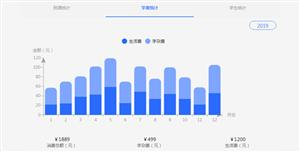

Bootstrap模板库
首页
模板
后台管理
企业网站
餐饮娱乐
创意作品集
手机移动端
非盈利组织
个人网站/博客
电子商务
即将上线/404
婚礼/婚纱摄影
医疗/健康
插件
加载和上传
提示和弹出层
图像和媒体
导航和菜单
背景和布局
时间
表单和按钮
选择和筛选
轮播和切换
评级和图表
CSS3动画
SVG动画
Canvas动画
JS小游戏
vuejs插件
手机端页面
其它
整站带后台
看看别人下载的
加入VIP
活动列表
共154个评级和图表插件
环形图表
统计金额
echarts
echarts.js环形图表统计金额
评级和图表
echarts.js环形图表统计金额，很使用的金额统计图表插件。
highlight
图表插件
统计图表
highlight.js图表插件例子代码
评级和图表
强大的图表插件highlight.js例子，几种常见的统计图表demo代码。

学费统计
手机端统计
数据分析
学生统计
图表
手机端数据统计图表tabs页面
评级和图表
手机端数据统计图表tabs页面，蓝色通用的到课统计，学费统计，学生统计图表手机页面tab切换模板。
星级评分
星星打分
js评分
jquery多属性星级评分插件
评级和图表
一款jquery多属性星级评分插件，常用的行星打分js插件。
文件夹
手机界面
css手机文件夹特效
评级和图表
css手机文件夹特效
曲线图插件
chartjs插件
js曲线图
jQuery紫色曲线图插件ChartJs
评级和图表
基于ChartJs图表插件实现的曲线图示例，jQuery紫色曲线图插件。
chartjs图表
图表插件
柱状图
Chart.js图表插件柱状图Demo
评级和图表
Chart.js图表插件实现的上下柱状图Demo
面积图
统计图表
图表插件
chartjs插件
多个面积图js统计图表插件
评级和图表
一款多个面积图js统计图表插件，基于chart.js插件实现的面积图样式。
柱状图
图表插件
canvas图表
chartjs
chart.js水平柱状图插件
评级和图表
chart.js图表插件例子，基于canvas绘制的水平柱状图样式。
散点图
统计图表
图表插件
chartsjs
charts.js插件实现的散点图样式
评级和图表
charts.js插件实现的散点图样式，一款js散点图统计图表插件。
曲线图
面积图
chartjs插件
图表插件
chart.js面积图曲线图统计插件
评级和图表
chart.js统计图表插件面积图示例，chart.js是一款很好用的图表插件，曲线图插件。
手绘风格
js图表插件
折线图
饼状图
柱状图
散点图
svg创意手绘风格js图表插件
评级和图表
svg创意手绘风格js图表插件。目前该插件支持折线图、饼状图、柱状图和散点图，支持npm安装。
图表插件
曲线图
趋势分析
统计图表
chart插件
chart.js多条曲线图插件
评级和图表
chart.js统计图表插件实现的多条曲线图插件，适合任何趋势分析的图表。
chartjs插件
柱状图插件
chartjs自定义柱状图插件
评级和图表
chartjs自定义柱状图插件，基于chart.js图表插件实现的柱状图示例，集成了自定义按钮功能。
仪表盘
汽车仪表盘
jquery汽车仪表盘插件
评级和图表
jquery实现的汽车仪表盘插件，6种样式的仪表盘样式。
仪表盘
echarts
chart插件
压力表
js炫酷仪表盘插件
评级和图表
一款js炫酷仪表盘插件下载，基于echarts.js实现的仪表盘样式。
3d柱状图
柱状图
echarts
立体图表
js真3d柱状图插件
评级和图表
一款js真3d柱状图插件，基于echarts.js实现的立体柱状图插件，不是看起来立体，这个统计图表可以改变方向。
大数据
大数据html
图表分析
大屏页面
土地交易
在线交易大数据
蓝色HTML土地交易大数据分析模板
评级和图表
使用echart.js插件+highmaps.js制作的图表分析大数据HTML页面。湖南省政府土地交易买卖大数据投屏页面，基础数据，土地分析报表，业务类型，信息发布报表。自动兼容windows、mac...
1
2
3
4
5
6
7
8
... 8
标签查找
|
关于我们
|
格式化工具
|
bootstrapmb.com 版权所有
苏ICP备17077179号-2